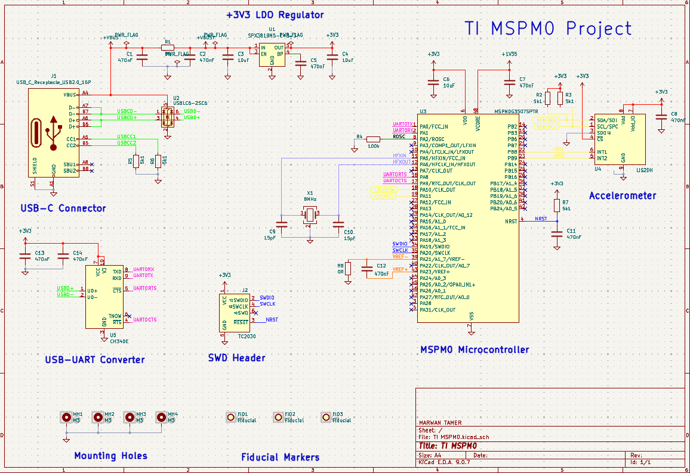
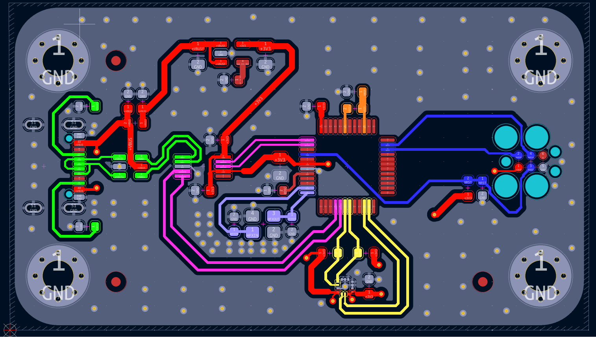
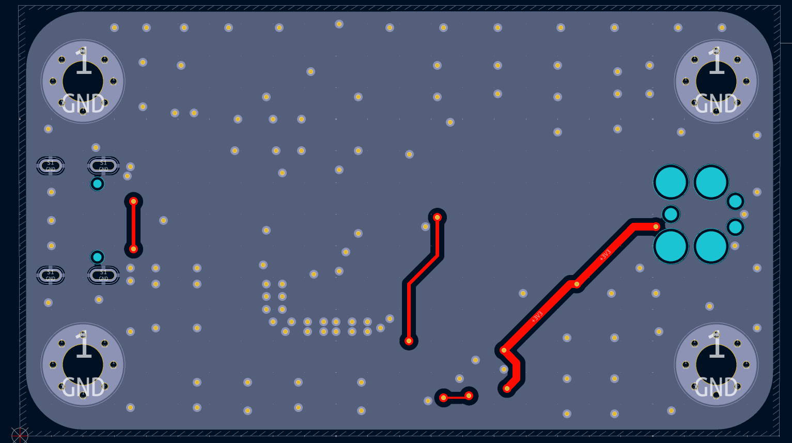
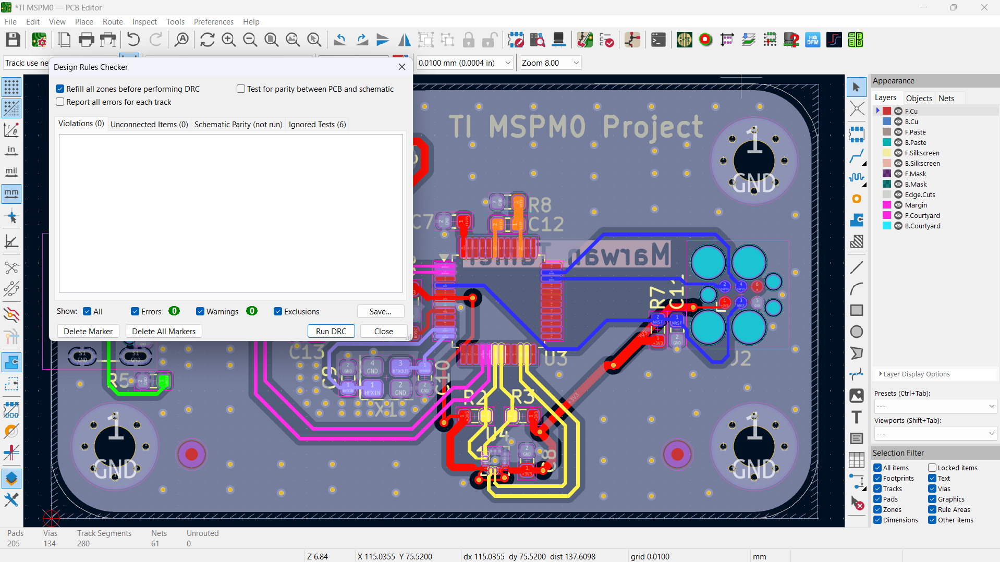
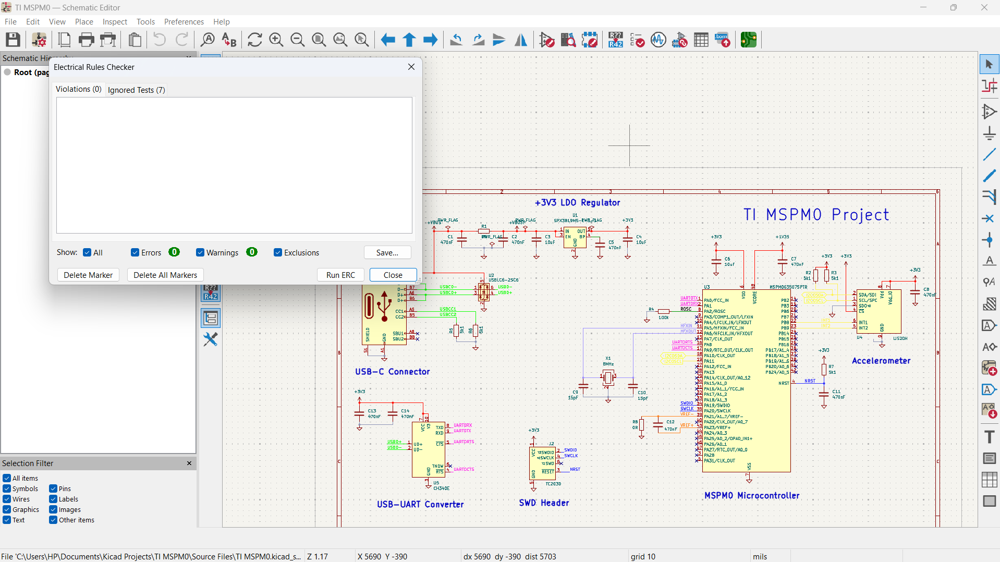
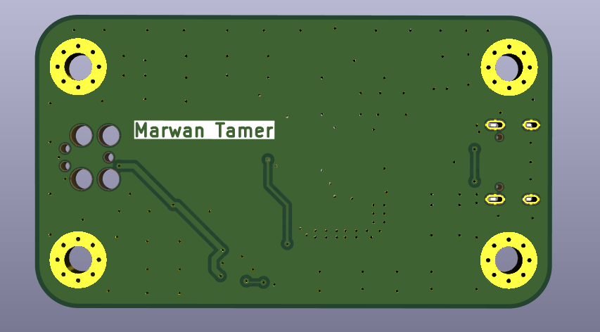

Overview
A 2‑layer development board built around the MSPM0G3507SPTR Arm Cortex‑M0+ MCU from Texas Instruments. It features USB‑C power/data via a USB‑UART bridge, an SWD programming header, an onboard 3.3 V LDO regulator, and an onboard I²C accelerometer. The board follows a tutorial‑based workflow and serves as a compact general‑purpose MSPM0 platform.
Schematic

The schematic groups functional blocks for power, MCU, USB, and sensors.
Component Selection
Components were chosen based on TI datasheets and tutorial guidance. Custom symbols were created for the MSPM0 MCU and accelerometer. The USB‑C connector and LDO were selected for reliable 5 V to 3.3 V conversion.
PCB Layout


Layout decisions emphasized custom schematic symbol creation, layer assignment (signal / ground / power), and component placement strategies learned from the tutorial.
DRC / ERC


All DRC and ERC checks passed cleanly.
3D Render


3‑D visualization shows board thickness and component placement.
Manufacturing Files
All manufacturing outputs are available in the repository.
What I Learned
- Creating custom schematic symbols.
- Understanding multilayer concepts and layer stack‑ups.
- Roles of signal, power, and ground layers.
- PCB manufacturing basics.
- Component placement strategies.
- Professional PCB layout workflow.